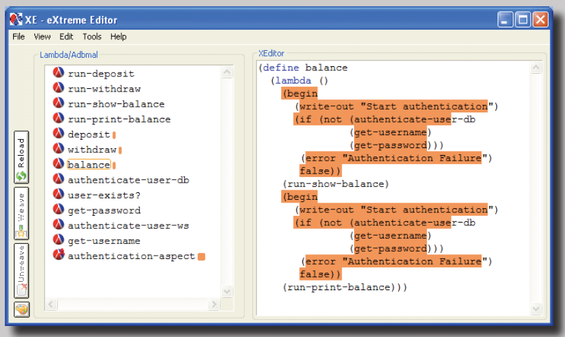
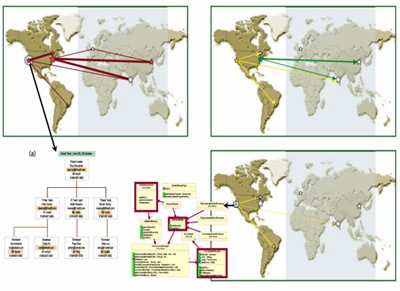
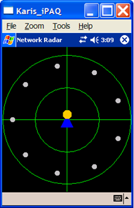
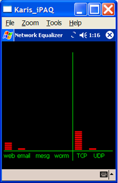
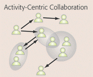
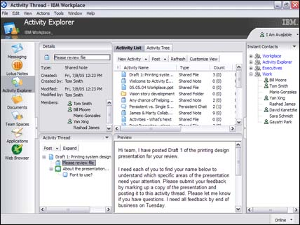
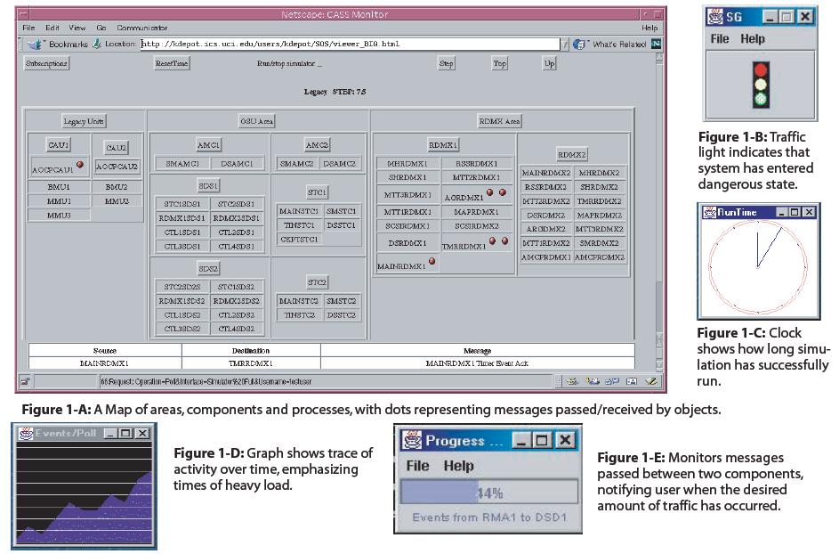
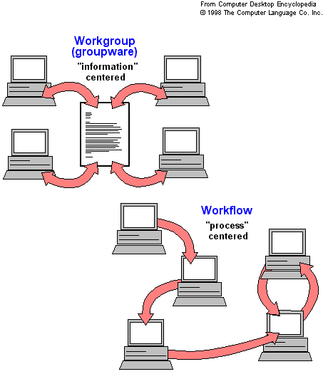

Menu:
Research
My research so far has focused on the construction and the empirical evaluation of collaborative tools and their underlying infrastructures. My goal is to better support the different needs of infrastructure developers, application engineers and end-users through the application of cuttig-edge software engineering technologies. As such, I've been conducting research in the areas of: publish/subscribe infrastructures, distributed collaborative software engineering, usable security, awareness, ubiquitous computing, contextual collaboration and software product lines.Some of the research projects I've been involved in the past years include:
- Analysis of Versatility Trade-offs of Publish/Subscribe Infrastructures
- Bridging the Aspect-Oriented Programming Usability Gap
- Continuous Coordination (Collaborative and Distributed Software Development)
- Effective Security Through Visualization (Awareness and Privacy)
- Augmenting Desktop Applications with Pocket-Size Devices
- Analysis of Trade-offs of Contextual Collaboration Infrastructures
- Adding Versatility to Publish/Subscribe Infrastructures
- Software Monitoring and Awareness Gauges
- Fully Decentralized Infrastructure for Large-Scale Workflow
These projects are further described as follows.
Analysis of Versatility Trade-offs of Publish/Subscribe Infrastructures
 quality trade-offs  verastility operators |
Versatility is an important software quality that enables software to serve multiple purposes in a usable and useful way. As such, versatility is central to middleware in general and publish/subscribe infrastructures specifically. The development of versatile software, however, is difficult. It must achieve a favorable balance between different software qualities including: usability, reusability, flexibility and performance, while supports problem domain dependencies and constraints. Developers adopt different strategies in the design of versatile software including: modularization, stabilization, variation, generalization and specificity. By combining these strategies, different infrastructures can be built, for example: minimal core, one-size-fits-all, coordination languages and flexible infrastructures. Each one of these approaches have costs and benefits. In this work, we present the results of a multi-dimensional quantitative and qualitative empirical study that analyzes the costs and benefits of existing versatility approaches in the publish/subscribe domain. These results are summarized in the form of guiding principles which goal is to better support application developers in choosing the best design approaches in the development of middleware; and infrastructure consumers in selecting the most appropriate infrastructure to support their applications.
|
Selected Publications:
- An Analysis of Publish/Subscribe Middleware Versatility (Technical Report)
- A Survey on Versatility for Publish/Subscribe Infrastructures (Technical Report)
- ISR Research Forum 2009 poster
Project Website:
http://awareness.ics.uci.edu/~rsilvafi/tradeoffs
Bridging the Aspect-Oriented Programming Usability Gap
|
In spite of the modularization benefits supported by the
Aspect-Oriented
programming paradigm, different usability issues have hindered its
adoption. The decoupling between aspect definitions and base code, and
the
compile-time weaving mechanism adopted by different AOP languages,
require
developers to manage the consistency between base code and aspect code
themselves. These mechanisms create opportunities for errors related to
aspect weaving invisibility and non-local control characteristics of
AOP
languages. In short, AOP developers lack adequate support for: 1)
visualizing and identifying the exact points in the code where aspects
are
woven; 2) preventing aspect-base code inconsistencies, and 3) evolving
aspect-oriented code in a coherent way. In this research, we study the use of IDE automation in the supports developers in managing these issues in the functional aspect-oriented programming domain. XE is a prototype implementing: in-line edit-time weaving (a.k. a.. fluid AOP), a relational model that keeps aspect-base code consistency, and a set of visualizations that help developers identify and manage the co-evolution of base and aspect codes. XE was implemented by Sushil Bajracharya and Wiwat Ruengmee under supervision of prof. Crista Lopes. We are currently performing user studies to validate our hypothesis. |
 |

Selected Publications:
- ASE 2008 paper
- ASE 2008 poster
- ISR technical report
Project Website:
http://www.wiwatruengmee.com/research/
Continuous Coordination (Collaborative and Distributed Software Development)
|
 |
The concept of continuous coordination unifies the
formerly opposed
strategies of formal and informal coordination into a single concept.
Continuous coordination recognizes and supports the understanding that
both aspects are legitimate and equally important and necessary
requirements for collaboration activities. It relies on formal
coordination mechanisms to ensure the consistency of the artifact, but
uses informal techniques to allow users to determine the best ways for
the consistency to be achieved – all in a modeless manner. From a software engineering perspective, the impact of formal coordination points (e.g. check-ins or process transitions) can thereby be much more easily assessed while an activity is in progress, allowing pre-emptive user actions to ease the burden of coordination that otherwise would arise at the formal coordination points. The continuous coordination principles have been applied in the development of different tools, applications and infrastructures including YANCEES. |
Selected Publications:
- Wirtschaftsinformatik (Special Issue on the Industrialization of Software Development), 2007
Project Website:
http://awareness.ics.uci.edu/cc
Effective Security Through Visualizations
| Security system designers have long valued transparency
as a feature of
their technologies, on the assumption that transparent approaches can
more easily be integrated with existing practices.
However, that transparent security mechanisms based on the
"security through obscurity" principle, make it impossible
for users to assess the security implications
of their own actions. The complexity of using,
monitoring and comprehending security technologies and their
relationship to applications and tasks is a critical problem for
improving effective security. Before computing can be trusted, it must
be trustable. A trustable infrastructure is one that makes its actions
observable and verifiable. In this project, we validated the hypothesis that by providing users with a technical infrastructure which makes visible the configuration, activity, and implications of available security mechanisms, users can make informed choices about their behavior; yielding more effective, more secure system use. To test this hypothesis, we built impromptu, a "trustable" infrastructure that makes information and security policy and configuration available to end users in ways that are visible, usable, and integrated with their normal activities. The hypothesis was validated through different user studies. |
|

Selected Publications:
- Symposium of Usable Privacy and Security (SOUPS'2006)
- Symposium of Usable Privacy and Security (SOUPS'2005)
- International Journal of Human-Computer Studies (Special Issue on HCI Research in Privacy and Security), 2005
Project Website:
http://www.isr.uci.edu/projects/swirl/
Augmenting Desktop Applications with Pocket-Size Devices
| Our user study with Impromptu revealed that users often
maximize
applications such as word processors when editing or reading files
being shared through Impromptu. This practice often hide the
impromptu interface, rendering its visualizations ineffective. This project studied the use of pocket-size devices as auxiliary displays and tools for desktop applications. In particular, palm-size devices complement the Impromptu desktop application with an extra visualization that can be used to call the end user's attention to important security events from the desktop. The project also studied the use of palm-size devices as thin clients and security awareness gauges in local area networks. During the design and implementation of these prototypes, we experienced many configuration issues with Java (J9) and Pocket PC. These issues and their solutions are described in the document: Configuring Java (J9) on a Pocket PC with RMI, SWT and SVG using CDC Personal Profile: some experiences and issues. This research has been sponsored by NSF (awards 0133749,0205724, 0326105, 0527729 and 0524033) and Intel Corporation. |
 Thin Client
|
Selected Publications:
- Symposium on User Privacy and Security (SOUPS 2006) Short Paper
- Symposium on User Privacy and Security (SOUPS 2006) Poster
Analysis of Trade-offs of Contextual Collaboration Infrastructures
|   Activity Explorer |
Contextual
collaboration seamlessly integrates existing Groupware technologies
into a uniform user experience that combines synchronous and
asynchronous interactions. This user experience is usually supported by
a collaboration infrastructure that needs to efficiently cope with the
fast switching and integration of different modes of interaction. In this work, I studied a model for contextual collaboration that supports multiple modalities of collaboration. The model is based on generic shared objects that provide building blocks for supporting contextual collaboration applications. I compared a native implementation with an alternative implementation that integrates existing notification and meeting servers to deliver the same model behavior. Contrary to a common belief, the reuse of specialized infrastructures did not perform as well as the native implementation, in particular, for highly interactive applications. |
Selected Publications:
- Journal of Universal Computer Science, 2008
- 12th International Workshop on Groupware (CRIWG'06)
Project Website:
http://www-128.ibm.com/developerworks/lotus/library/ae/
Adding Versatility to Publish/Subscribe Infrastructures
| Traditional publish/subscribe infrastructures are not
extensible nor
configurable with respect to the set of features they support. The
result are either bulky one-size-fits-all infrastructures such as
CORBA-NS, that support a large
set of applications, but cannot scale (up or down) to specific
application needs;
infrastructures such as Siena, that are minimal and efficient, but
cannot be easily extended to meet the application-specific
functionality demanded by many applications. In this project, I designed and implemented YANCEES, a versatile (configurable and extensible), usable and reusable publish/subscribe infrastructure, based on plug-ins and extensible languages, that can be extended and customized to meet the specific requirements of different applications. YANCEES can better support the needs of infrastructure developers by supporting the reuse of plug-ins and by automating configuration management. It can better support application developers by supporting the development of application-specific infrastructues that better matches the application domain requirements. |
|

{kind=link}
{kind=link}
{kind=link}
{kind=link}
{kind=link}
{kind=link}
Selected Publications:
- Software Engineering and Middleware'2005
- Distributed Event-Based Systems'2003
Project Website:
http://isr.uci.edu/projects/yancees
Software Monitoring and Awareness Gauges
|  Awareness Gauges
|
Whether one is a pilot or a software engineer,
awareness gauges
enable users to monitor key aspects of their environment without
distracting their attention away from the primary task. In this project, we studied the use of event notification servers and event processing languages in the monitoring of software runtime properties. Instrumented software components produce events that are filtered, combined and presented to software engineers through the use of guages, tailored to different monitoring needs, for example: the detection of crytical conditions, the analysis of temporal software behavior or the visualization of runtime program execution based on its architectural components. |
{kind=link}
Poster:
- Awareness Gauges Poster
Project Website:
http://www.isr.uci.edu/projects/cassius/gauges.shtml
Fully Decentralized Infrastructure for Large-Scale Workflow
| Standard
client-server Workflow management systems have an intrinsic
scalability limitation, the centralized server, which represents a
bottleneck for large-scale applications. This server also is a
single-failure point that may disable the whole system. In this research, we studied the use of a fully distributed architecture for Workflow management systems based on mobile agents. It is based on the idea that the case (an instance of the process) migrates from host to host, following a process definition, while the case corresponding activities are executed. This basic architecture is improved so that other requirements for Workflow Management Systems, such as fault tolerance, monitoring, interoperability, security and others, are also supported. The resulting infrastructure was analyzed, with its limitations, advantages and project decisions described. The research showed the scalability benefits of agent-based infrastructures, as well as some limitations with respect to security and management overhead. |
 Centralized vs P2P Workflow
|
Selected Publications:
- International Journal of Cooperative Information Systems (IJCIS), 2003
- 4th International Symposium on Autonomous Decentralized Systems (ISADS'99)
Project Website:
http://awareness.ics.uci.edu/~rsilvafi/wonder